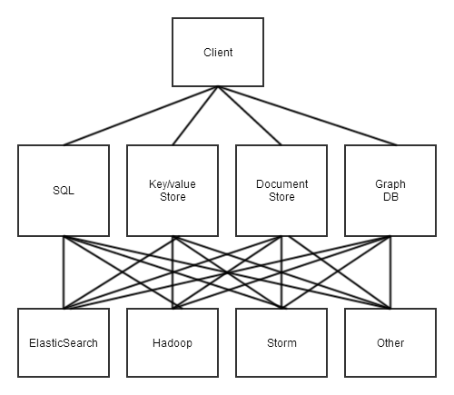
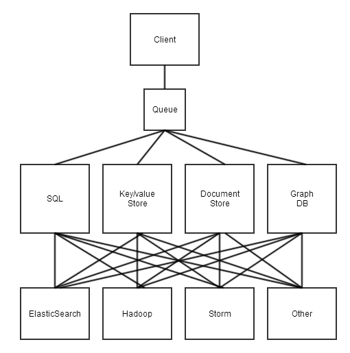
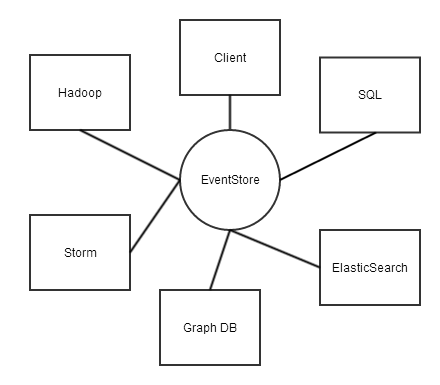

Event-driven services
with F# and EventStore
Leo Gorodinski
@eulerfx
Plan
- Define "service"
- Implement basic services in F#
- Persistence and integration with EventStore
- Contrast with other solutions
Service
val service : Input -> Output
Service
type Input =
| AddItem of productId:string
| RemoveItem of productId:string
type Output =
| ItemAdded of productId:string
| ItemRemoved of productId:string
let service input : Input -> Output =
match input with
| AddItem productId -> ItemAdded productId
| RemoveItem productId -> ItemRemoved productId
Service
type Input =
| AddItem of productId:string
| RemoveItem of productId:string
type Output =
| ItemAdded of productId:string
| ItemRemoved of productId:string
let service input : Input -> Async<Output> =
async {
do! Async.Sleep 1000
match input with
| AddItem productId -> return ItemAdded productId
| RemoveItem productId -> return ItemRemoved productId }
Service
type Input =
| AddItem of productId:string
| RemoveItem of productId:string
type Output =
| ItemAdded of productId:string
| ItemRemoved of productId:string
let service (d:string) input : string -> Input -> Async<Output> =
async {
do! Async.Sleep 1000
printfn "hello=%s" d
match input with
| AddItem productId -> return ItemAdded productId
| RemoveItem productId -> return ItemRemoved productId }
Architecture
EventStore API
type Conn = IEventStoreConnection
type Stream = string
type From = int
type Count = int
val write : Conn -> Stream -> EventData -> Async<unit>
val read : Conn -> Stream -> From -> int -> Async<StreamEventSlice>
N-TIER
Message Queue
EventStore
State Machine
- Input
- Output
- State
- S0
- (Input, State) -> (Output,State)
Event-sourcing
val exec : Input * State -> Output
val apply : Output * State -> State
let T (input,state) : Input * State -> Output * State =
let output = exec (input,state)
let state' = apply (output,state)
(output,state')
Event-driven Service Network

Event-driven services
with F# and EventStore
Leo Gorodinski
@eulerfx